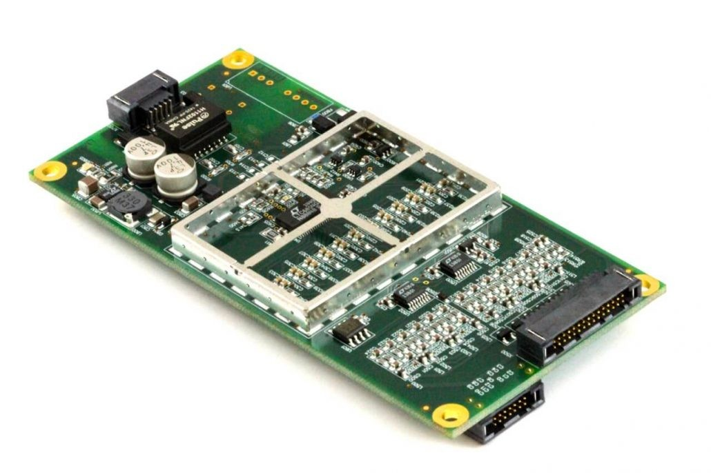
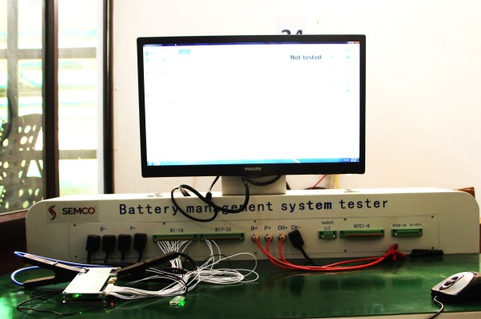
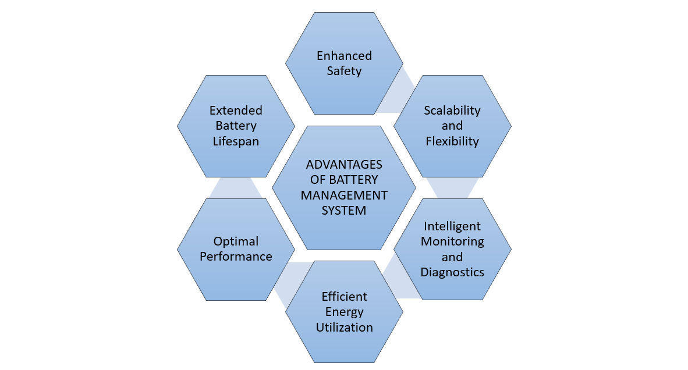
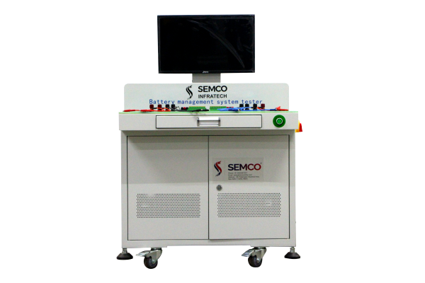
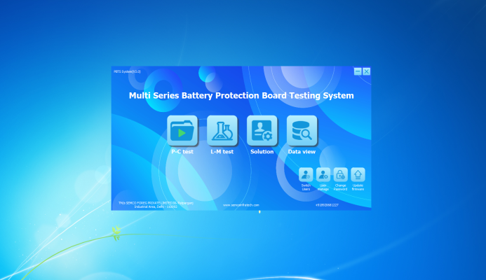
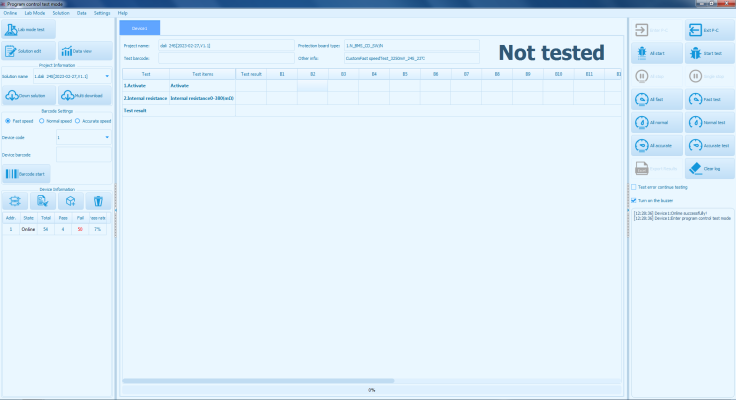
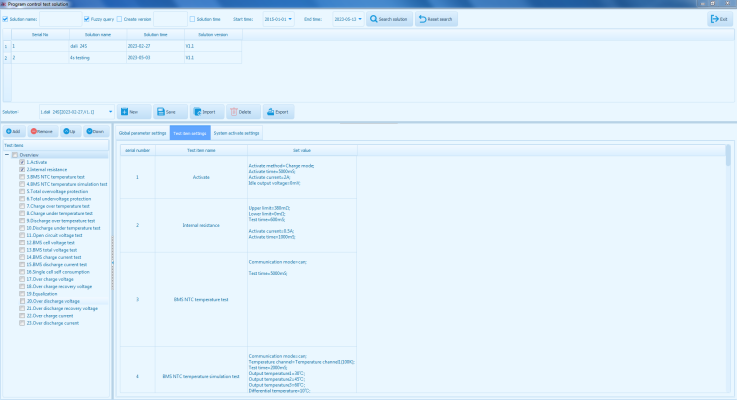

Introduction
A battery management system (BMS) is a critical component in modern battery-powered devices and systems. As the demand for efficient and reliable energy storage grows, the BMS plays a vital role in ensuring the safe operation and optimal performance of batteries. By monitoring, controlling, and protecting the battery, the BMS enables efficient energy transfer, prevents hazardous conditions such as overcharging and over-discharging, and maximizes the battery's lifespan. From small portable devices to large-scale energy storage systems, the BMS acts as the guardian of batteries, implementing intelligent algorithms and safety measures to safeguard against potential risks. With its comprehensive functionality, the BMS empowers the widespread adoption of battery technology across various industries, revolutionizing the way we store and utilize energy.

Principle of a BMS
The principles of a battery management system (BMS) revolve around monitoring, control, and protection of the battery. The BMS operates based on a few fundamental principles:
Monitoring: The BMS continuously monitors various parameters of the battery, including voltage, current, temperature, and state of charge (SoC). This real-time data allows the BMS to assess the battery's condition, detect any abnormalities or potential risks, and make informed decisions regarding charging, discharging, and overall battery management.
Control: The BMS actively controls the charging and discharging processes to ensure optimal performance and safety. It regulates the charging current and voltage to prevent overcharging, which can damage the battery, and controls the discharging rate to avoid excessive discharge, which can lead to capacity degradation. The BMS also manages the power flow between the battery and the connected system, ensuring efficient energy transfer and preventing potentially harmful conditions.
Protection: One of the primary roles of a BMS is to protect the battery from harmful operating conditions. It employs various protective measures such as overvoltage protection, undervoltage protection, overcurrent protection, and temperature monitoring. These safeguards prevent the battery from operating outside its safe limits, mitigating the risk of damage, thermal runaway, or safety hazards.
Balancing: In multi-cell battery packs, the BMS implements cell balancing techniques. It ensures that each individual cell within the pack is charged and discharged uniformly, preventing imbalances that can degrade performance and shorten battery life. Balancing techniques may include redistributing energy between cells or adjusting the charging profiles of individual cells to maintain consistency.
Overall, the principles of a BMS encompass continuous monitoring, active control, protection against adverse conditions, and balancing to optimize battery performance, maximize safety, and prolong battery life. By adhering to these principles, the BMS plays a vital role in ensuring the reliable and efficient operation of battery-powered systems.
But,
Why BMS is required?
A battery management system (BMS) is an essential component for any battery-powered system. Its primary purpose is to ensure the safe and efficient operation of the battery, maximize its performance, and extend its lifespan.

First and foremost, a BMS is necessary for battery safety. It constantly monitors critical parameters such as temperature, voltage, and current levels to prevent potentially dangerous situations. Overcharging, over-discharging, and excessive temperatures can lead to irreversible damage to the battery or even catastrophic failures such as thermal runaway, where the battery rapidly releases its stored energy, resulting in fire or explosion. The BMS actively controls and regulates these parameters to keep the battery within safe operating limits, mitigating risks and enhancing overall system safety.
Moreover, a BMS is responsible for optimizing battery performance. It carefully manages the charging and discharging processes to ensure efficient energy transfer. By accurately monitoring the battery's state of charge (SoC) and state of health (SoH), the BMS helps maximize the available capacity and maintain a consistent level of performance. It also prevents overcharging and over-discharging, which can degrade the battery's capacity and shorten its lifespan. With precise control and monitoring capabilities, the BMS ensures that the battery operates within its optimal range, providing reliable and consistent power.
Another vital function of the BMS is cell balancing in multi-cell battery packs. In applications where multiple battery cells are connected in series or parallel, there can be variations in cell characteristics, such as capacity or internal resistance. These imbalances can lead to uneven charging and discharging, which can accelerate cell degradation and reduce overall pack performance. The BMS actively equalizes the charge levels among cells, redistributing energy to ensure uniformity and prolonging the pack's life.
In summary, a battery management system is essential for the safe, efficient, and reliable operation of battery-powered systems. It safeguards against hazardous conditions, optimizes performance, and enhances battery lifespan. By employing sophisticated monitoring, control, and balancing techniques, the BMS maximizes the benefits of battery technology while minimizing risks and ensuring long-term viability.
After understanding the requirements, you might be thinking what are its benefits then below information will help you,
A battery management system (BMS) offers numerous benefits in the realm of battery-powered systems. Some of the key advantages include:

Enhanced Safety: The BMS ensures the safe operation of batteries by monitoring critical parameters such as temperature, voltage, and current levels. It actively prevents overcharging, over-discharging, and excessive temperature conditions, reducing the risk of battery damage, thermal runaway, and safety hazards like fire or explosion.
Extended Battery Lifespan: By actively managing the charging and discharging processes, the BMS helps maximize the battery's lifespan. It prevents overcharging and over-discharging, which can degrade the battery's capacity over time. Additionally, the BMS implements cell balancing techniques in multi-cell battery packs, ensuring uniform charge levels among cells and reducing imbalances that can accelerate degradation.
Optimal Performance: The BMS maintains the battery within its optimal operating range, allowing it to deliver consistent and reliable performance. It accurately monitors the state of charge (SoC) and state of health (SoH) of the battery, enabling precise control of charging and discharging profiles. This optimization ensures efficient energy transfer, improves overall system efficiency, and maximizes the available capacity of the battery.
Efficient Energy Utilization: The BMS controls the power flow between the battery and the connected system, ensuring efficient utilization of energy. It manages the charging and discharging rates, optimizing the energy transfer to match the requirements of the load. This efficient energy utilization results in improved system performance, reduced energy waste, and extended battery runtime.
Intelligent Monitoring and Diagnostics: The BMS provides real-time monitoring and diagnostics capabilities, allowing for proactive maintenance and troubleshooting. It can detect and report abnormal battery conditions, such as voltage imbalances or temperature deviations, enabling timely intervention and preventive actions. This intelligent monitoring helps identify potential issues before they escalate, minimizing downtime and enhancing system reliability.
Scalability and Flexibility: The BMS is adaptable to different battery chemistries, voltages, and configurations, making it suitable for a wide range of applications. Whether it's a small portable device or a large-scale energy storage system, the BMS can be customized and scaled to meet specific requirements, providing flexibility and compatibility across various platforms.
Overall, a battery management system offers significant benefits, including enhanced safety, extended battery lifespan, optimal performance, efficient energy utilization, intelligent monitoring, and scalability. By harnessing the capabilities of a BMS, battery-powered systems can operate reliably, efficiently, and safely, unlocking the full potential of energy storage technology.
After knowing the benefits, you might be thinking of purchasing one machine for your battery plant. But one question would be troubling you that among all these brands who claim to be the best which one is actually best. So, we have done that work for you. The most trusted brand in the Indian battery industry that has been supplying automated battery solutions for three decades. Yes, you are right.
Semco
Semco is a leader in supplying lithium-ion battery testing and assembly equipment. It has enthralled its customers with various customized solutions. One such product that Semco offers is a BMS that offers high quality and multifunctional approach for managing the batteries. Talking about this highly automated and customized machine here are some key features.
Semco BMS Tester
Semco Infratech introduces the SEMCO SI-BMST 1-16S/24S/32S Battery Management System Tester, a comprehensive and versatile testing solution designed specifically for battery management systems (BMS). With a range of models offering different current capacities (40A/50A/60A/100A/200A- 120A/180A/200A/300A), this advanced machine is equipped with a wide array of features to ensure thorough testing and evaluation of BMS performance.

The SEMCO SI-BMST is equipped with charging and discharging protection tests, which allow for precise monitoring and evaluation of the BMS's ability to control the charging and discharging processes of the battery. This feature ensures that the BMS effectively safeguards the battery from overcharging and over-discharging, protecting its overall lifespan and performance.
Another notable feature is the short-circuit protection test, which evaluates the BMS's capability to detect and respond to short-circuit conditions promptly. This test helps ensure the safety of the battery system and prevents any potential damage or hazards that may arise from short-circuit events.
The machine also incorporates over-voltage and under-voltage release protection tests, enabling assessment of the BMS's ability to detect and respond to abnormal voltage conditions. This feature ensures that the BMS can maintain the battery within safe voltage limits, preventing any potential damage or instability caused by excessive or insufficient voltage levels.
Additionally, the SEMCO SI-BMST offers a single-cell self-consumption test, which measures the individual cell's power consumption within the battery pack. This test helps identify any anomalies or discrepancies in power consumption, allowing for precise diagnosis and optimization of the battery's performance.
Furthermore, the machine provides a total self-consumption test of the protection board, evaluating the overall power consumption of the BMS's protection circuitry. This test helps assess the efficiency and effectiveness of the BMS's power management capabilities, ensuring optimal performance and energy utilization.
Testing Results



Lastly, the SEMCO SI-BMST features a DIR (Direct Internal Resistance) testing function, allowing for the measurement and analysis of the battery's internal resistance. This test helps identify any variations or degradation in the battery's internal components, providing valuable insights into the battery's health and performance.
Overall, the SEMCO SI-BMST Battery Management System Tester offers a comprehensive range of testing capabilities, enabling thorough evaluation and assessment of BMS performance. With its diverse set of features, including charging and discharging protection tests, short-circuit protection tests, voltage release protection tests, self-consumption tests, and DIR testing, this advanced machine ensures the reliability, safety, and optimal functioning of battery management systems in a wide range of applications.
How to check the BMS tester before using?
Before using a BMS tester, it is crucial to perform a few checks to ensure its proper functioning and accuracy. First, inspect the physical condition of the tester, checking for any visible damage or loose connections. Verify that all cables and probes are intact and securely connected.
Next, confirm that the power source for the tester is reliable and stable. Check the battery levels or power supply to ensure sufficient power for testing. It is also recommended to review the user manual or operating instructions provided by the manufacturer to familiarize yourself with the specific functions and features of the tester.
Lastly, consider performing a preliminary test on a known battery or BMS to verify that the tester accurately measures and displays the expected readings. By conducting these checks, you can ensure that the BMS tester is ready for accurate and reliable testing.
What all does a BMS tester tests?
A BMS tester is designed to evaluate various aspects of a battery management system (BMS). It performs a range of tests to assess the performance, safety, and functionality of the BMS. Some common tests conducted by a BMS tester include:
Charging and Discharging Protection Test: This test assesses the BMS's ability to control the charging and discharging processes of the battery, ensuring it operates within safe limits and preventing overcharging or over-discharging.
Short-Circuit Protection Test: This test verifies the BMS's capability to detect and respond to short-circuit conditions promptly, protecting the battery and preventing potential hazards.
Voltage Release Protection Test: It evaluates the BMS's response to abnormal voltage conditions, ensuring that it can maintain the battery within safe voltage limits and prevent damage or instability caused by excessive or insufficient voltage levels.
Self-Consumption Test: This test measures the power consumption of the BMS itself, ensuring its efficiency and optimizing energy utilization.
Internal Resistance (DIR) Test: This test measures the battery's internal resistance, providing insights into its health, performance, and overall condition.
Find out the connection and operation video of BMS Tester
These tests collectively help determine the reliability, safety, and performance of the BMS, ensuring its effective operation in battery-powered systems.
Got the solution to your battery worries then what are you waiting for book a live demo and operate your battery plant without any hassles and tensions. If you liked our newsletter then do not forget to share and comment and stay tuned for our next Newsletter on “Battery Charge and Discharge Cabinet”. Till then “Happy Batteries”.